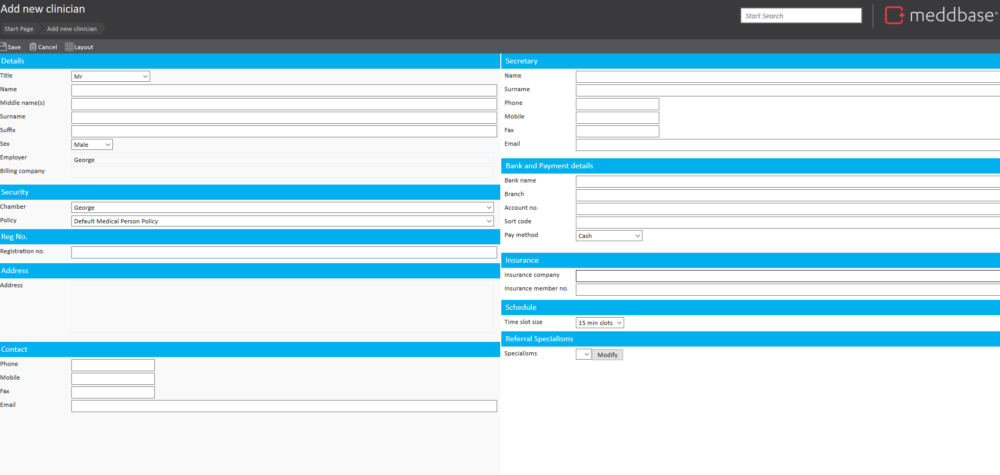

In Meddbase, adding a clinician involves creating a demographic record for a healthcare professional. This process is separate from user creation and focuses on capturing essential information related to the clinician's role and personal details. It allows you to register the clinician and add any optional information that may be relevant for their practice or scheduling.
The purpose of this article is to provide clear, step-by-step instructions on how to add a clinician to Meddbase. This includes the required details for registration, as well as additional optional fields that can be added to ensure the clinician's record is complete.
This is adding a demographic record for a clinician, this isn't creating a user.
Adding clinicians, like adding patients, requires only a limited number of details and can be completed within minutes. Simply navigate to the ‘Add Clinician’ tool (Start Page > Clinician > Add Clinician) where you will be presented with the clinician’s ‘Personal Details’ page.

To create a demographic record for a clinician, the following details must be defined before saving:
Additionally, you may choose to add the following optional details:
These optional details can be added or updated at any time after the clinician is registered.